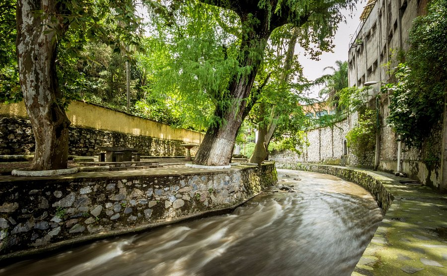

Blog Turístico de Orizaba
Historia del Palacio de Hierro

Descubre la historia del emblemático Palacio de Hierro, diseñado por Gustave Eiffel.
Gastronomía Típica de Orizaba

Prueba delicias como los pambazos, tamales, elotes y gorditas.
El Encanto del Paseo del Río

Un recorrido lleno de naturaleza, esculturas y un zoológico al aire libre.